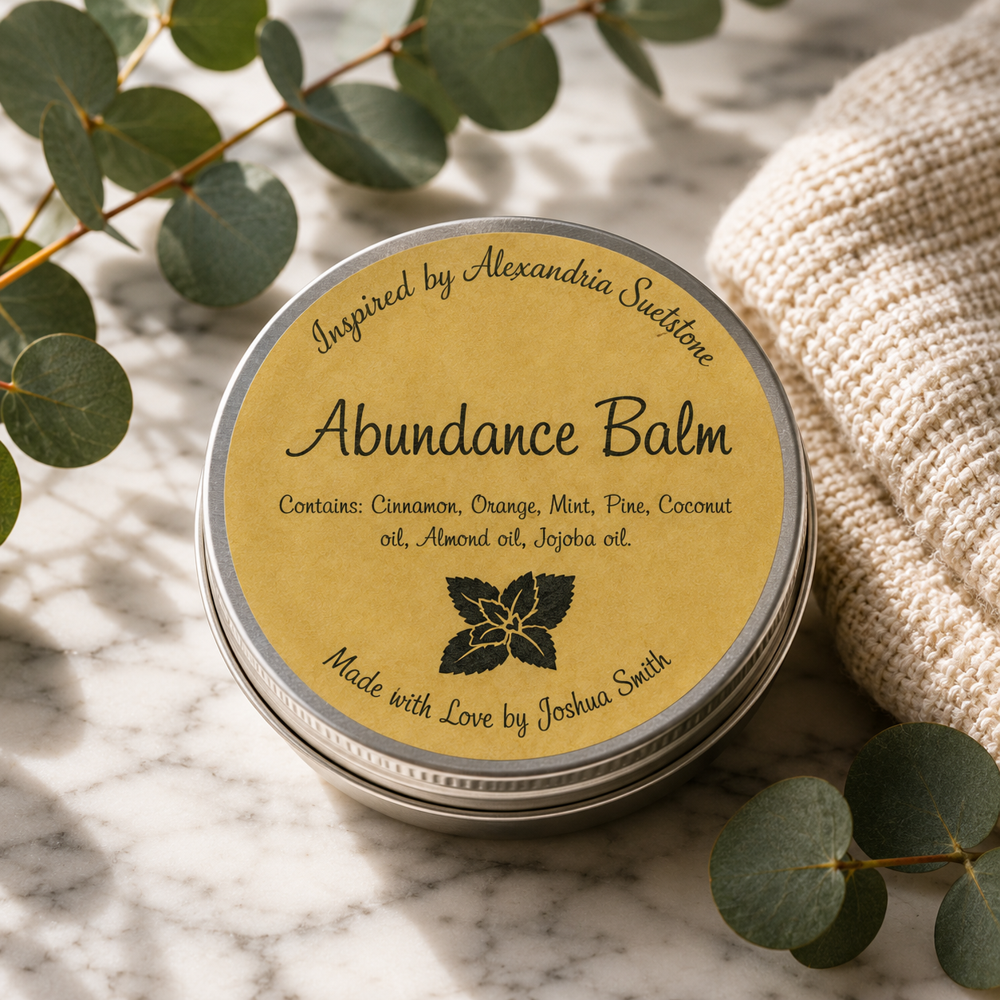
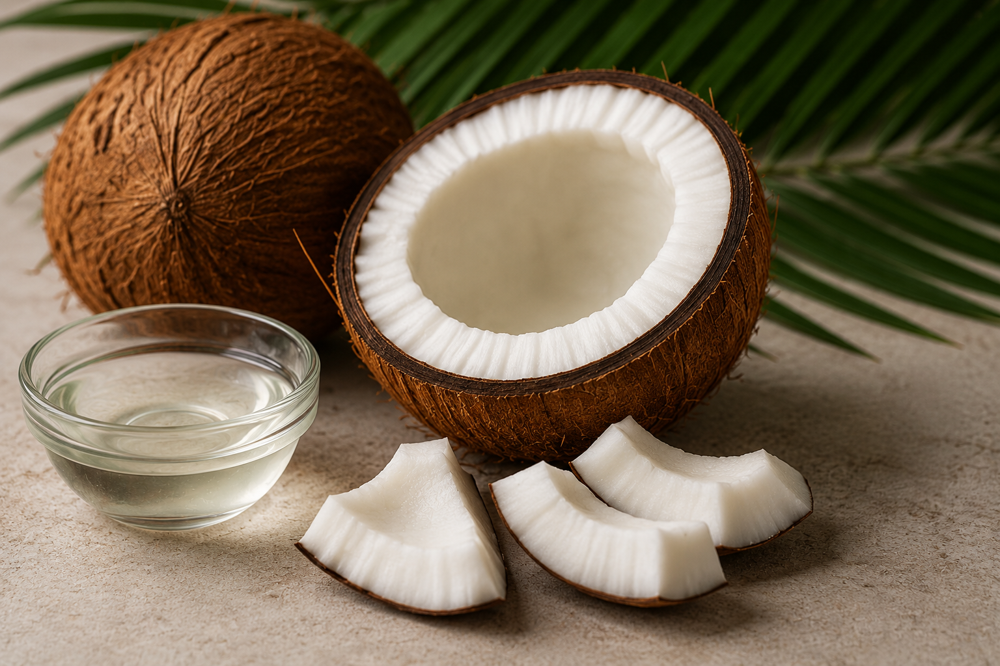
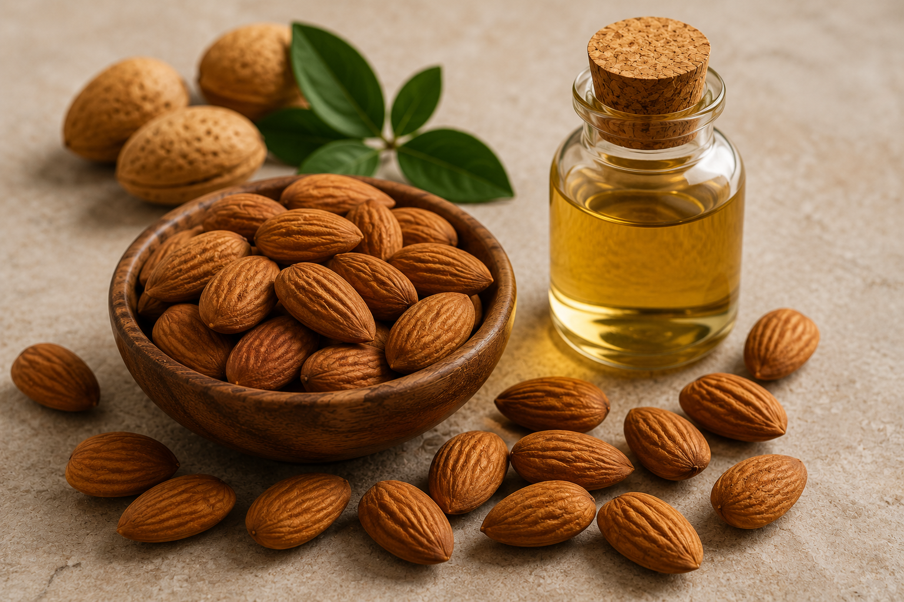
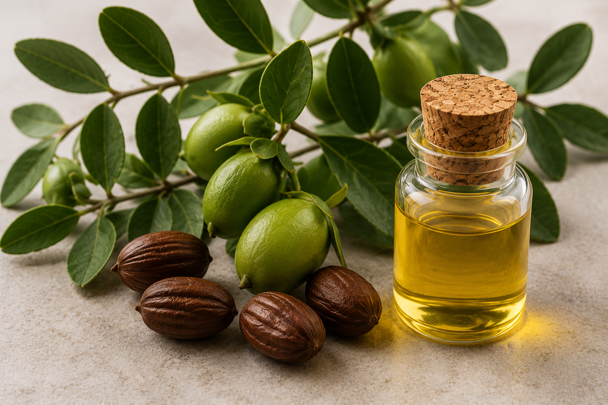
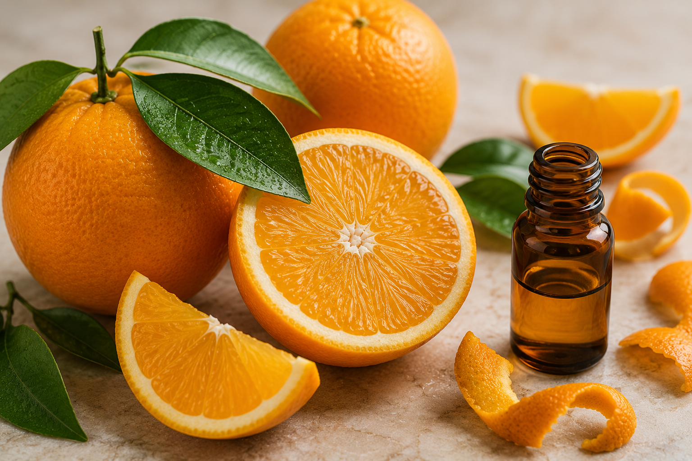
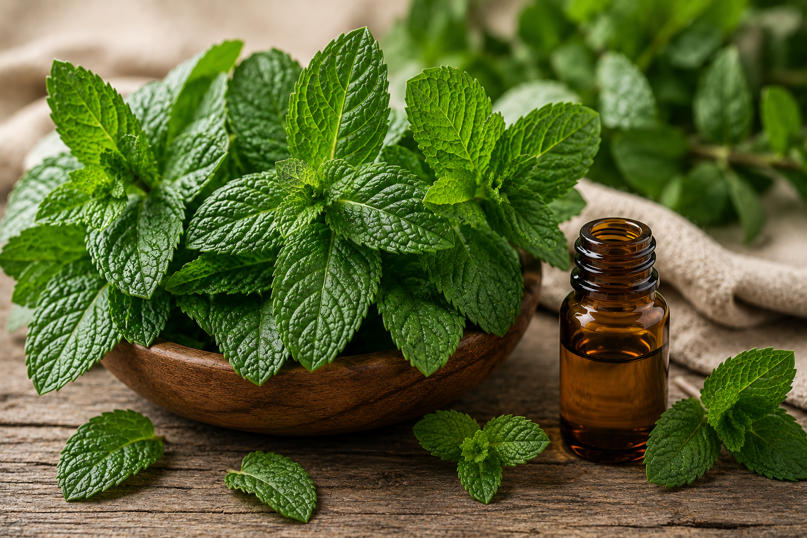
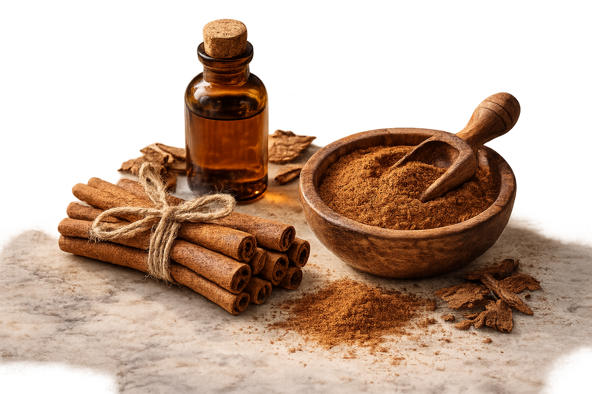

Small batch
Made with careful attention rather than mass production.
Handcrafted botanical body care
A rich botanical balm made in small batches with thoughtfully selected plant oils, waxes, and aromatic ingredients. Created to bring softness, comfort, and intention to your everyday skin-care ritual.
Made with careful attention rather than mass production.
A purposeful blend of plant-based oils and aromatic extracts.
Designed for hands, elbows, knees, feet, and dry areas.
Inspired by kindness, gratitude, and a sense of abundance.

The signature balm
Abundance Balm melts gently into the skin, leaving behind a comforting layer of botanical moisture and a distinctive aromatic experience. A little goes a long way.
For external use only. Review the full ingredient list before use. Patch testing is recommended for sensitive skin.
Our beginning
Abundance Balm began as a personal blend made with ingredients chosen for their texture, aroma, and connection to the natural world. What started as a practical skin-care ritual became something more meaningful: a daily reminder to slow down, care for yourself, and share kindness with others.
Every batch is created with intention. The process is hands-on, thoughtful, and deliberately small. We believe the objects used every day can carry meaning—and that even a simple tin of balm can become part of a better ritual.
Explore the botanicals

Inside every tin

A rich botanical base that gives the balm its smooth, melt-on-contact character.

A lightweight plant oil selected for glide, softness, and a comfortable skin feel.

A silky botanical oil that helps create a balanced, non-heavy finish.

A bright citrus note that brings warmth and energy to the aromatic blend.
A crisp, forest-inspired note that adds depth and a grounded natural character.

A clean, refreshing aromatic note that gives the blend a lively finish.

A warm spice note used to complete the balm's distinctive botanical aroma.
Bring the ritual home
Discover a handcrafted balm made for the small moments that shape the day: after washing your hands, before stepping outside, or whenever your skin—and your spirit—could use a little care.